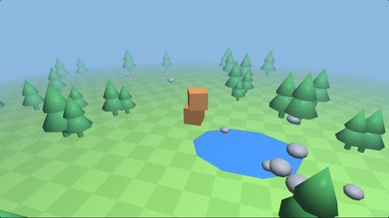
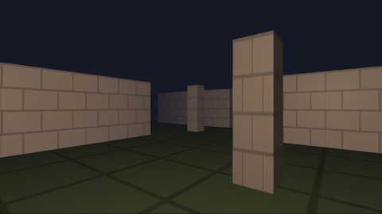

Samples
Small, complete games. Each one is a single main.js you can read top to bottom.
2D (Canvas 2D)


3D (WebGL 2, and one raycaster)
-

-

-

-

Start here
Sample 00: hello only checks that the engine loads. Every sample's README lists its controls, what it teaches, and three things to try changing.